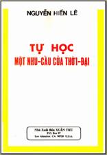
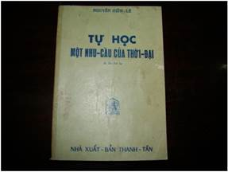

Tự học để thành công là tác phẩm đầu tiên của nhà xuất bản Nguyễn Hiến Lê và là “tiền thân” của cuốn Tự học, một nhu cầu của thời đại này.
Trong Hồi kí, cụ Nguyễn Hiến Lê cho biết trước khi rời Long Xuyên để lên Sài Gòn sống bằng cây bút, cụ đã “có gần đủ tài liệu để viết ba bốn cuốn nữa như Tự học để thành công, Nghề viết văn, Bí quyết thi đậu, Đông Kinh nghĩa thục…”. Và trong thời gian ở sau hãng Sáo Tân Định, cụ viết ngay cuốn Tự học để thành công để, theo lời cụ, “đem chút ít kinh nghiệm của tôi giúp những bạn trẻ ít học mà muốn mở mang kiến thức, và những bạn mới ra trường muốn bổ túc sự học ở trường”.
Tự học để thành công xuất bản lần đầu năm 1954; đến năm 1964, cụ Nguyễn Hiến Lê sửa chữa, bổ sung, và đổi nhan đề là Tự học, một nhu cầu của thời đại (Thanh Tân xuất bản).

Từ bản.doc do bạn Trieuthoa thực hiện theo bản scan do bạn Twonghuyen cung cấp, tôi dùng bản của Nhà xuất bản Xuân Thu (không rõ năm xuất bản) - bản scan đăng trên website Tiếu Lùn - để sửa vài lỗi nhỏ mà hầu hết các lỗi này do bản nguồn in sai, và chép thêm chữ Hán với sự trợ giúp của bạn Vvn (bản.doc của bạn Trieuthoa chưa chép chữ Hán). Vì bản scan của Tiếu Lùn khá mờ nên có một số chữ Hán không đọc được, tôi phải dùng ảnh chụp, và mặc dù ký hiệu $ thiếu một vạch đứng nhưng chúng tôi vẫn phải tạm dùng, mong các bạn thông cảm.
Xin chân thành cảm ơn các bạn Trieuhoa, Townguyen, Vvn.
*
Gần đây chúng tôi thấy trên trang http://sachxua.net/forum/index.php?topic=11222.15, bạn Bogiadispacy có đăng hình bìa một số sách mà mình ưa thích, trong đó có cuốn Tự học, một nhu cầu của thời đại do nhà Thanh Tân in lần thứ ba vào năm 1968 mà chúng tôi tạm dùng làm hình bìa eBook mới này. Chúng tôi không biết bản in đó có phải là bản in cuối cùng trước năm 1975 hay không, nhưng chúng tôi tin rằng đó là bản in cuối cùng được cụ Nguyễn Hiến Lê sửa chữa và bổ sung vì chúng tôi thấy cụ có nêu cuốn Tổ chức công việc làm ăn xuất bản năm 1967, còn những tác phẩm in từ năm 1968 trở về sau đều không thấy cụ nhắc tới.

Một điều nữa chúng ta cũng cần để ý. Điều này mãi đến bộ Hồi kí, cụ Nguyễn Hiến Lê mới cho chúng ta biết – và chúng tôi chưa thấy tác giả nào viết về sự tự học của cụ nhắc đến. Đó là: mỗi môn, cụ học cái khái quát, cái cốt yếu trước, sau mới đi sâu vào chi tiết. Cụ bảo:
“…có điều này ít độc giả nhận thấy. Trong mỗi môn chính, mới đầu tôi viết một hai tác phẩm dễ hoặc khái quát, rồi ít lâu sau tôi trở lại, mở rộng thêm, đào sâu hơn. Như vậy chính là do khuynh hướng tự học của tôi: biết cái cốt yếu đã rồi sau đi vào chi tiết. Và đó cũng là một sự nhất trí trong cách tôi làm việc.
Thí dụ như:
- Môn Tổ chức công việc, tôi viết về qui tắc chung trong cuốn Tổ chức công việc theo khoa học, rồi một năm sau hoặc dăm bảy năm sau tôi áp dụng vào việc trong đời, đi vào chi tiết hơn trong các cuốn: Kim chỉ nam của học sinh, Tổ chức gia đình, Tổ chức công việc làm ăn. Như vậy là vấn đề đã được nới rộng.
- Về Luyện văn, cuốn II và III khó hơn cuốn I, bộ Hương sắc trong vườn văn lại sâu sắc hơn bộ Luyện văn.
- Về Văn học Trung Quốc, sự mở rộng lần lần từng đợt còn rõ rệt hơn nữa.
Mới đầu là bộ Đại cương Văn học sử Trung Quốc từ thượng cổ tới cách mạnh Tân Hợi, vào khoảng 1925.
Sau tôi đào sâu văn học cổ Trung Quốc. Đề tài đó mênh mông, một đời người không thể làm hết được. Riêng về thơ Đường đã có nhiều người giới thiệu: Đường thi, Thi văn bình chú của Ngô Tất Tố, Đường thi của Trần Trọng Kim, Đường thi trích dịch của Bùi Khánh Đản và Đỗ Bằng Đoàn (in ronéo) và nhiều tập mỏng khác của dăm nhà khác nữa. Chưa ai viết về Tống thi cả.
Thơ không phải là sở trường của tôi mà cổ văn Trung Quốc chỉ được Nam Phong giới thiệu độ mươi bài, cho nên tôi nghiên cứu về cổ văn. Năm 1966, cho xuất bản bộ Cổ văn Trung Quốc, cuốn đầu tiên trong loại đó ở nước nhà; tiếp theo tôi soạn chung với ông Giản Chi hai bộ Chiến Quốc sách và Sử kí của Tư Mã Thiên. Sau cùng tôi viết về Văn học Trung Quốc hiện đại, mà trong bộ Đại cương văn học sử Trung Quốc tôi chỉ phát qua trong chương cuối.
Nên kể thêm Tô Đông Pha, một cuốn thuộc loại tiểu sử danh nhân nhưng cũng cho độc giả biết được ít nhiều về thi từ và cổ văn đời Tống, vì trong cuốn đó, ngoài Tô Đông Pha tôi giới thiệu cả cha và em của Tô (Tô Tuân, Tô Triệt), Âu Dương Tu, Vương An Thạch…
Nếu kể cả bản dịch Nhân sinh quan và thơ văn Trung Hoa nguyên văn của Lâm Ngữ Đường, thì về văn học Trung Quốc tôi đã góp được khoảng 3.500 trang, bảy nhan đề.
- Về Triết học Trung Quốc cũng vậy, mỗi ngày tôi đào sâu thêm. Mới đầu là Nho giáo một triết lí chính trị, một cuốn tổng quát về tư tưởng chính trị của Khổng, Mạnh; rồi tới Đại cương triết học Trung Quốc, một bộ cũng tổng quát về triết học Trung Hoa từ thượng cổ tới cuối Thanh.
Sau tôi chuyên về triết học thời Tiên Tần, khảo cứu đời sống và tư tưởng từng triết gia một. Đầu năm 1975, tôi đã cho ra được Nhà giáo họ Khổng, Mạnh Tử, Liệt Tử và Dương Tử, đã viết xong mà chưa in Trang Tử, khởi sự viết chung với Giản Chi về Tuân Tử và Hàn Phi thì miền Nam được giải phóng.
Từ năm 1976 tới nay, tôi đã viết xong Lão Tử, Mặc học, Khổng Tử, Luận ngữ, Kinh Dịch như đã nói.
Nếu chỉ kể các tác phẩm đã in thì tới đầu 1975, về triết học Trung Hoa tôi đã góp được khoảng 2.100 trang; nếu kể thêm những tập tôi đã viết xong mà chưa in nữa thì tới nay, tổng cộng được 2.100 đã in với 2.900 trang chưa in, là 5.000 trang”.
Đoạn trích ở trên cho chúng ta biết thêm một cách tự học của cụ Nguyễn Hiến Lê và khá nhiều tác phẩm mà cụ chưa nói đến trong cuốn Tự học, một nhu cầu của thời đại.
Goldfish
Đầu tháng 12 năm 2009
Sửa chữa và bổ sung đầu tháng 6 năm 2013